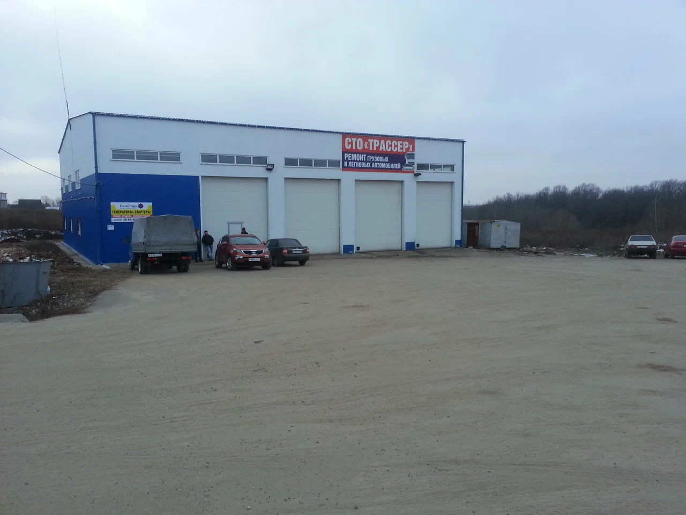
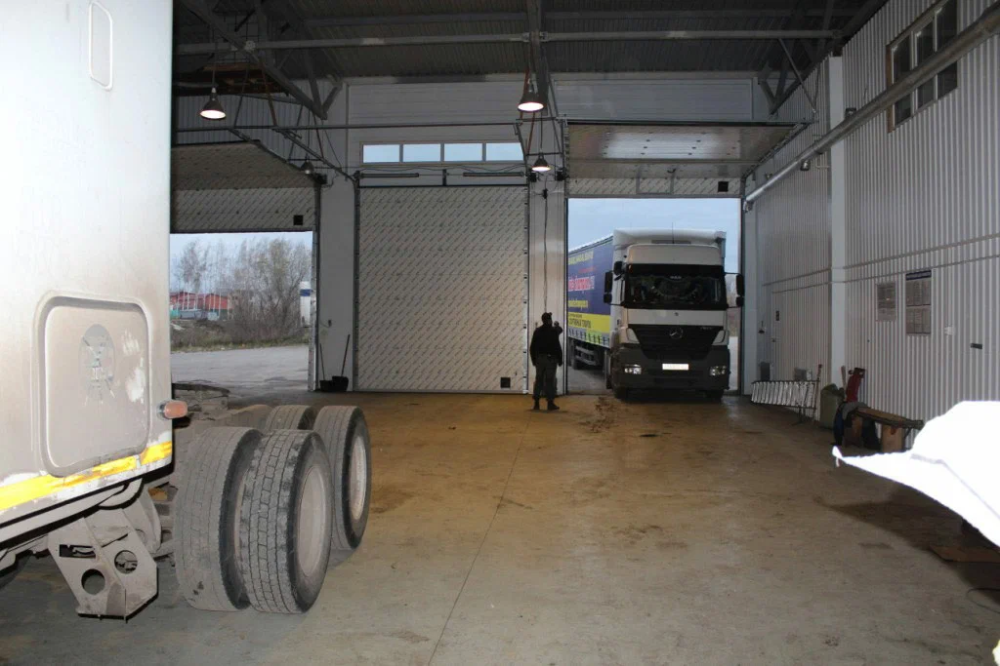
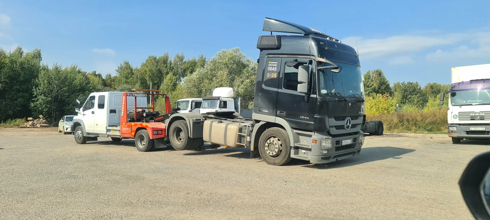

Стационарное грузовое СТО
Ремонт грузовиков и спецтехники в Хирле-Сир
TRASSER21 — сервис грузовой техники по адресу Лесная ул., 13. Удобное расположение, выгодная стоимость и понятные условия ремонта.
Грузовики
Спецтехника
Тахографы
Диагностика и ТО
- 6 направленийОт диагностики до слесарного ремонта.
- 4 телефонаМожно быстро дозвониться в рабочее время.
- 1 адресСтационарный сервис с понятным маршрутом.
Работаем в будни с 08:00 до 17:00. Если вопрос срочный, лучше сразу звонить.
О сервисе
Стационарный сервис для грузовой техники
Сюда приезжают за понятным ремонтом без лишней суеты: с адресом, записью, телефоном и маршрутом в одном месте.



Стационарное СТО
Не выездной формат: клиент сразу понимает, куда ехать и где будет ремонт.
Быстрый контакт
Позвонить в сервис или сразу открыть маршрут можно в пару касаний.
Под грузовики и спецтехнику
Страница уже собрана под основные запросы коммерческой техники.
Быстро с телефона
Мобильная версия упрощает звонок и помогает не потеряться по дороге.
Услуги
Основные направления работ
Теперь эти направления можно развивать как отдельные страницы услуг: это удобнее и для клиентов, и для продвижения сайта.
Тахографы
Установка, проверка, консультации и профильные работы по тахографам.
Открыть страницу услугиАвтоэлектрика
Работы по электрической части, диагностике цепей и оборудованию.
Открыть страницу услугиРемонт грузовиков
Слесарный ремонт, обслуживание и восстановление рабочих узлов.
Открыть страницу услугиТО и диагностика
Плановые проверки, поиск неисправностей и оценка состояния техники.
Подробнее о ремонте и ТОГрузовая техника
Страница под ремонт и обслуживание магистральных и городских грузовиков.
Открыть страницу услугиСпецтехника
Отдельная страница под сервисные работы по спецтехнике и смежным машинам.
Открыть страницу услугиСтраницы услуг
Отдельные страницы под ваши направления
Такой формат помогает размещать каждую услугу отдельно: отправлять прямую ссылку клиенту, запускать рекламу и собирать трафик из поиска по конкретным запросам.
Тахографы
Подходит для отдельного описания работ, особенностей обращения и быстрых контактов.
Перейти на страницуРемонт грузовиков
Можно подробно раскрыть слесарный ремонт, ТО, диагностику и обслуживание.
Перейти на страницуАвтоэлектрика
Отдельная точка входа для клиентов с проблемами по электрике и оборудованию.
Перейти на страницуСпецтехника
Хорошо работает, если хотите показать, что обслуживаете не только грузовики.
Перейти на страницуПреимущества
Почему к нам едут
Стоимость
Выгодные цены и отсутствие лишних накруток.
Местоположение
Удобная точка ремонта по адресу Лесная ул., 13.
Условия
Четкий график, несколько номеров и понятная запись.
Как работаем
Понятный путь от звонка до ремонта
Для владельца грузовой техники важно быстро понять, что делать дальше. Поэтому сценарий обращения должен быть простым и прозрачным уже на сайте.
Звонок в сервис
Вы описываете поломку, тип техники и удобное время визита.
Уточнение задачи
На первом контакте можно быстро понять, куда направить машину и к какой услуге отнести обращение.
Заезд на сервис
Клиент приезжает в стационарный сервис по адресу Лесная ул., 13, д. Хирле-Сир.
Диагностика и работа
После осмотра понятнее объем работ, направление ремонта и дальнейшие действия.
Сервис в работе
Фото зоны ремонта и приема техники
Реальные фотографии помогают сразу понять, как выглядит база, что за техника сюда приезжает и какой у сервиса фактический масштаб.

Фото 01
Ремонтный бокс
Реальная рабочая зона сервиса внутри бокса.

Фото 02
Техника на базе
Живой кадр с грузовой техникой на площадке сервиса.

Фото 03
Подъезд с трассы
Маршрут и дорожный ориентир для первого визита.
Техника
С какими машинами удобно работать
Если есть реальные марки, лучше заменить этот список на точный. Даже ориентировочный перечень уже помогает посетителю понять, подходит ли ему сервис.
MAN
Scania
Volvo
DAF
Mercedes-Benz
КАМАЗ
МАЗ
Полуприцепы
Как доехать
Маршрут до сервиса
Для стационарного СТО блок маршрута должен быть одним из самых заметных.
Адрес: Лесная ул., 13, д. Хирле-Сир
График: Пн–Пт 08:00–17:00
Выходные: Сб–Вс
Координаты: 56.050657, 47.261563

FAQ
Частые вопросы перед визитом
Это выездной сервис или стационарное СТО?
Это стационарное грузовое СТО. Ремонт выполняется по адресу Лесная ул., 13, д. Хирле-Сир.
Нужно ли заранее записываться?
Лучше позвонить заранее, чтобы уточнить загрузку сервиса и удобное время приема техники.
Какие работы можно уточнить по телефону?
По телефону удобно обсудить симптомы неисправности, тип техники, желаемое время визита и первичный объем работ.
Можно ли сразу построить маршрут?
Да, на странице есть отдельные кнопки для быстрого открытия маршрута в Яндекс Картах.
Быстрый старт
С чего лучше начать клиенту
Нужны тахографы
Если вопрос связан с тахографами, лучше сразу идти на профильную страницу и звонить по направлению.
Перейти к услугеНужен общий ремонт
Если проблема в узлах, обслуживании или диагностике, главная точка входа — страница ремонта грузовиков.
Открыть ремонтПроблема по электрике
Ошибки, отказ оборудования и электрическая часть лучше воспринимаются на отдельной странице автоэлектрики.
Открыть автоэлектрикуКонтакт
Свяжитесь с сервисом
Самый быстрый способ обращения сейчас — звонок. По телефону удобнее сразу обсудить поломку, уточнить направление работ и понять, когда лучше подъехать.
- Если вопрос срочный, лучше звонить сразу.
- По телефону можно быстро уточнить тип техники и симптомы неисправности.
- Маршрут до сервиса открывается в один клик.
Основной номер
+7 (961) 344-70-96
Доп. номер
+7 (8352) 36-12-96
График работы
Пн-Пт: 08:00-17:00
Адрес сервиса: Лесная ул., 13, д. Хирле-Сир. Перед выездом лучше коротко позвонить и уточнить загрузку.